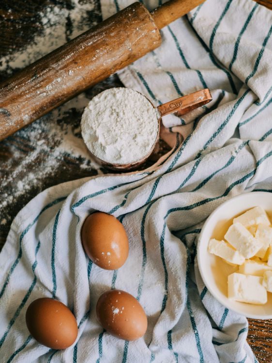
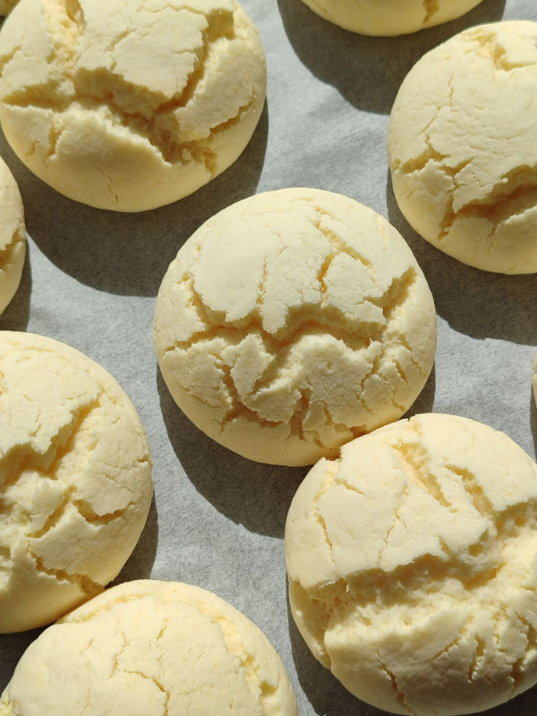

Att bjuda på sju sorters kakor är en klassisk svensk fikatradition och syftar på det minsta antalet kaksorter som etiketten tidigare föreskrev att kakfatet ska innehålla.
Tanken är att erbjuda ett varierat urval av småkakor så att det finns något för olika smaker: spröda, mjuka, chokladiga, kryddiga och fruktiga kakor. Utöver småkakorna serveras även vetebröd och och tårta.
Traditionen förknippas ofta med kafferep och högtider men passar lika bra till vardagsfika eller kalas och har funnits sedan 1800-talet.
På den här sidan finns recept på sju småkakor att prova på!

Bildkälla: Lauren Gray / UnsplashBildkälla: Conor Brown / Unsplash
Drömmar

Bildkälla: Nur Tok / Pexels
Drömmar är mycket spröda småkakor med mild vaniljsmak som är lätta att baka. Hjorthornssalt gör att kakorna får sin karakteristiskt porösa och ljuvligt frasiga konsistens.
40-45 kakor
Ingredienser
100 g smör
3 dl strösocker
1 dl rapsolja
2 tsk vaniljsocker
1 tsk hjorthornssalt
4 dl vetemjöl
Gör så här
Sätt ugnen på 150 °C.
Rör smör och socker mjukt.
Tillsätt oljan, lite i taget, under vispning.
Blanda vaniljsocker och hjorthornssalt med lite av mjölet och rör ned blandningen i smeten. Tillsätt sedan resten av mjölet.
Rulla små bollar av degen och lägg dem på plåtar med bakplåtspapper.
Grädda mitt i ugnen i cirka 15-20 minuter och låt kallna på plåten.
Hallongrottor är småkakor med en fyllning av hallonsylt. De är mjuka och smuliga och har en härlig smak av smör och vanilj.
Det är mördegskakor med en liten grop fylld med ljuvlig hallonsylt. De är både enkla att baka och uppskattade på kakfatet.
20-24 kakor
Ingredienser
200 g smör eller margarin
1 dl strösocker
2 tsk vaniljsocker
4,5 dl vetemjöl
1 tsk bakpulver
1 dl fast hallonsylt
Gör så här
Sätt ugnen på 200 °C.
Arbeta snabbt ihop smör, socker, vaniljsocker, vetemjöl och bakpulver till en deg. Gärna i matberedare.
Rulla degen till små bollar och lägg dem i små kakformar ca 5 cm i diameter.
Gör en grop i varje kaka med ett finger eller skaftet på en sked.
Fyll groparna med hallonsylt.
Grädda i cirka 12-15 minuter och låt sedan svalna på galler.
Schackrutor är klassiska småkakor med ett dekorativt rutmönster av ljus och chokladsmakande mördeg. Kakorna blir spröda och ser mycket läckra ut på kakfatet.
De imponerar med sitt utseende men är väldigt enkla att baka.
ca 50 kakor
Ingredienser
200 g osaltat smör
1 dl strösocker
4,5 dl vetemjöl
Mörk deg: 2 msk kakao
Ljus deg: 2 tsk vaniljsocker
Gör så här
Ta fram smöret så att det hinner bli rumsvarmt.
Vispa ihop smör och socker till en jämn smet.
Tillsätt vetemjöl, lite i taget, och fortsätt röra tills det blir stora smulor.
Dela degen i två lika stora delar.
Arbeta in kakaon i den ena delen och vaniljsocker i den andra så att du får en ljus och en mörk deg.
Dela degarna dem i två delar så du får två ljusa och två mörka delar.
Rulla ut till längder och tryck till dem mot bakbordet så längderna får platta kanter. Lägg dem tätt ihop, med två ovanpå de andra så de bildar ett litet schackmönster.
Låt vila i kylen 1-2 timmar.
Sätt ugnen på 200 °C.
Ta fram längden och skär ca 3-4 mm tjocka skivor.
Lägg kakorna på en plåt med bakplåtspapper och grädda mitt i ugnen i ca 8-10 minuter.